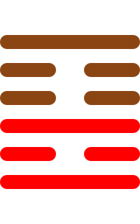

第二十二卦
贲卦

卦辞
亨，小利有攸往。
贲卦象征文饰、美化与文明。卦辞意为：亨通，小的利益有所往。贲卦教导我们要注重外在形式与内在实质的和谐，适度的美化是有益的。
彖传
贲亨，柔来而文刚，故亨。分刚上而文柔，故小利有攸往。刚柔交错，天文也。文明以止，人文也。观乎天文，以察时变。观乎人文，以化成天下。
彖传说：贲亨通，柔来文饰刚，所以亨通。分刚上而文饰柔，所以小利有所往。刚柔交错，是天文。文明以止，是人文。观察天文，以察时机变化。观察人文，以教化成就天下。
象传
山下有火，贲。君子以明庶政，无敢折狱。
象传说：山下有火，就是贲卦。君子应当效法这种精神，明了各项政务，不敢轻率判决诉讼。火光照亮山野，象征文明教化，要谨慎处理政务。
爻辞
初九：贲其趾，舍车而徒
文饰其脚趾，舍弃车子而步行。
初九爻位于最下方，朴实无华。文饰自己的脚趾，表示注重基本的美化，舍弃车子步行，显示朴素的美德。
六二：贲其须
文饰其胡须。
六二爻得中得正，适度美化。文饰胡须，表示注重仪表的适度修饰，得体而不过分。
九三：贲如濡如，永贞吉
文饰如濡湿，永守正道吉祥。
九三爻阳刚得位，光彩照人。文饰如被水洗过一样光彩，永远坚守正道就会吉祥，表示适度而不失本真。
六四：贲如皤如，白马翰如，匪寇婚媾
文饰如白色，白马如飞，不是盗寇，是婚配。
六四爻接近君位，纯洁美好。文饰如白色素雅，白马如飞奔腾，不是盗寇而是美好的婚姻，象征纯洁的结合。
六五：贲于丘园，束帛戋戋，吝，终吉
文饰于丘园，束帛少少，困难，最终吉祥。
六五爻居中尊位，朴实无华。文饰山丘园地，用少量丝帛，虽有困难但最终吉祥，表示朴素之美。
上九：白贲，无咎
白色文饰，没有灾害。
上九爻位于极点，返璞归真。用白色作为文饰，表示回归本真，没有灾害，是最高的境界。